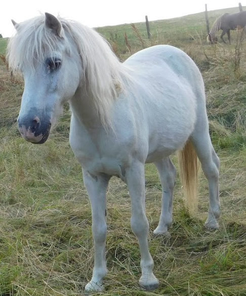
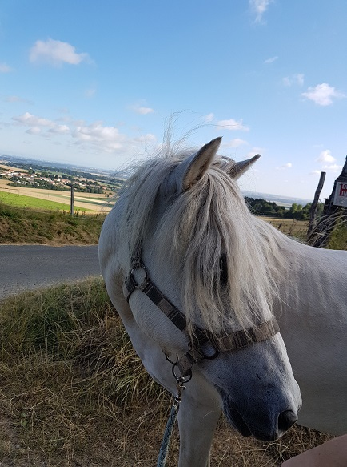
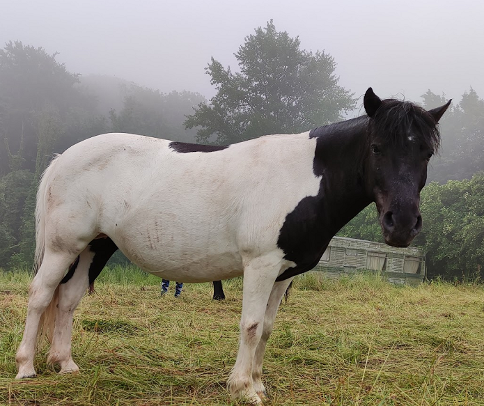
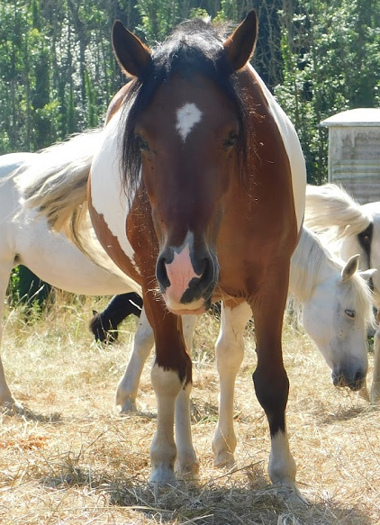
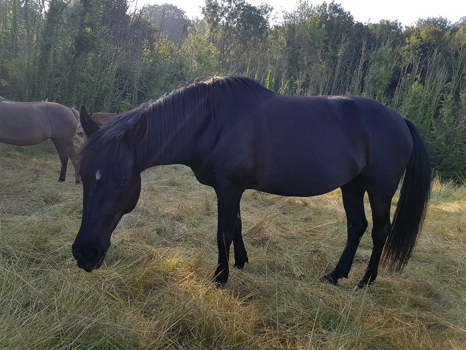
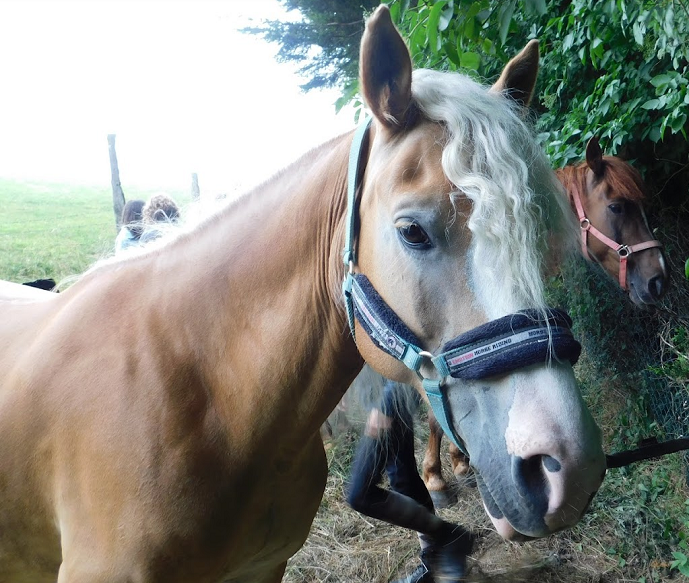
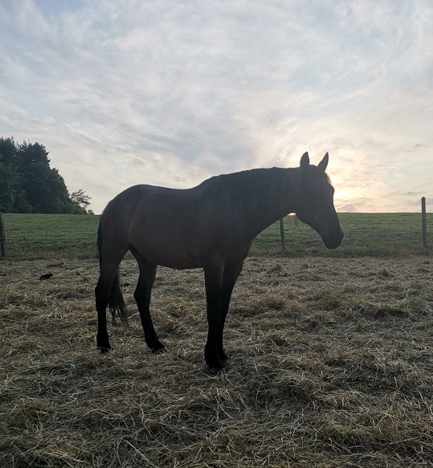

Les poneys
D'apache Du Moulin

Son vrai nom c'est D'Apache du Moulin. C'est un gros poney blanc, Le plus sage du club. C'est lui qui est chargé de tirer la charrette! Il sait aussi très facilement enlever son licol. C'est pour cela qu'on le surnomme "Détache" !
Iglou

Iglou est au club depuis très longtemps. Il est très gourmand mais c'est le poney favori de nombreux enfants.
Jade

Jade est née en 1997 et a passé toute sa vie au club. Calme et sure, elle est parfaite pour les cavaliers débutants.
Nougatine

C'est la plus belle. Sa robe est pie alezan : ça veut dire qu'elle est blanche avec des tâches marron clair !
Caramelle

C'est une femelle alezanne comme son nom l'indique. Son nom et sa robe évoquent les saveurs de l’enfance. C’est sûrement pour cela que Caramelle est l’un des poneys préférés des petits
Iliade

Iliade est un poney très gourmand. Elle est très douée en cuisine. Elle est aussi très douée en cuisine.
See-you

See-you est un poney très gourmand. Elle est très douée en cuisine. Elle est aussi très douée en cuisine.
Cheyene

Cheyenne est géniale en concours de sauts d'obstacles.
Moustique

Moustique est original : Il a une raie de mulet.
Vanille

Vanille est un poney très gourmand. Elle est très douée en cuisine. Elle est aussi très douée en cuisine.
Quoquo

Le plus petit poney du club
Schtroumpfette

Schtroumpfette habite Shetland City. C'est l'une des plus petites ponettes du club.
Princesse

Princesse est un poney très gourmand. Elle est très douée en cuisine. Elle est aussi très douée en cuisine.
Sicie

Sicie est un poney très gourmand. Elle est très douée en cuisine. Elle est aussi très douée en cuisine.
Noble

Noble est un poney très gourmand. Elle est très douée en cuisine. Elle est aussi très douée en cuisine.
Puce

Puce est un poney très gourmand. Elle est très douée en cuisine. Elle est aussi très douée en cuisine.
Calordina

Calordina est un poney très gourmand. Elle est très douée en cuisine. Elle est aussi très douée en cuisine.